PRODUKTY WAXOYL
Profesjonalne rozwiązania do ochrony antykorozyjnej, pielęgnacji samochodów oraz przygotowania i zabezpieczania powierzchni.
Wybierz produkt, aby przejść do jego szczegółowej strony i poznać zastosowanie, właściwości oraz sposób użycia.
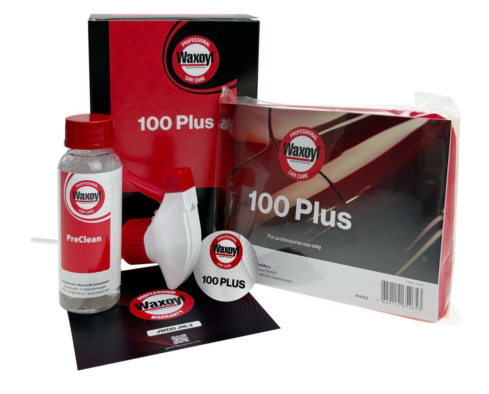
100 PLUS
Profesjonalna ochrona lakieru, połysk i hydrofobowość.
ZOBACZ PRODUKT →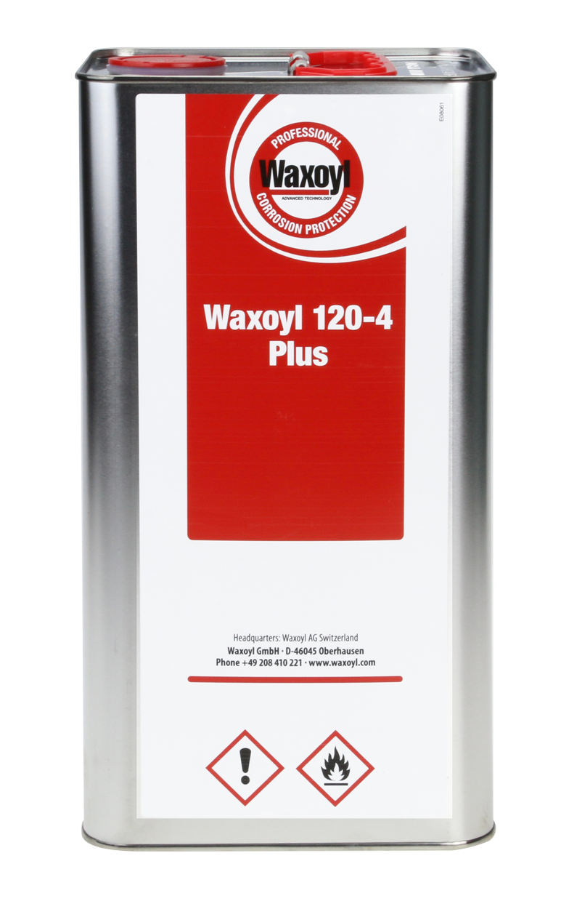
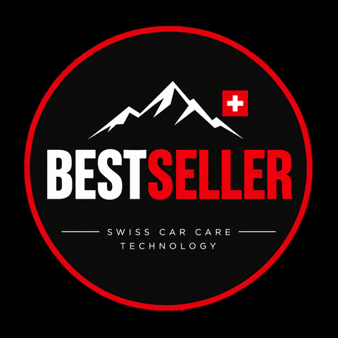
120-4 PLUS
Długotrwała ochrona pustych przestrzeni, elementów pojazdów i podwozia.
ZOBACZ PRODUKT →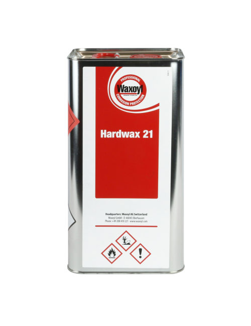
HARDWAX 21
Czarne zabezpieczenie antykorozyjne podwozia, elastyczne i odporne na ścieranie.
ZOBACZ PRODUKT →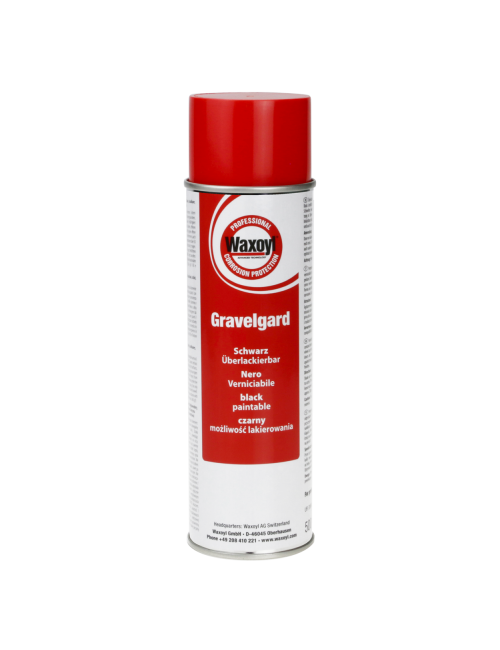
GRAVELGARD
Wytrzymała i elastyczna ochrona przed uderzeniami kamieni.
ZOBACZ PRODUKT →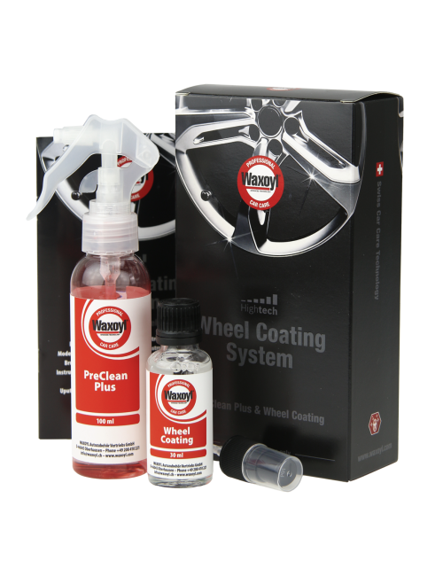
WHEEL COATING
Ceramiczna ochrona felg aluminiowych, chromowanych, polerowanych i lakierowanych.
ZOBACZ PRODUKT →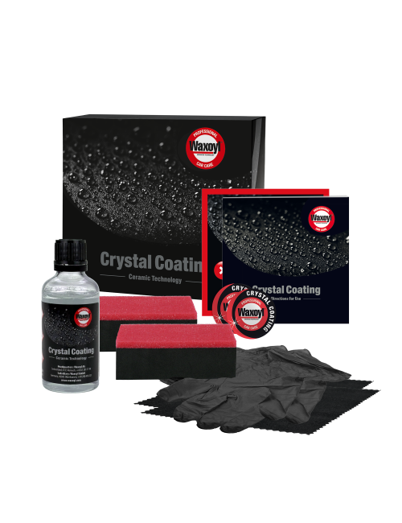
CRYSTAL COATING
Trwała ceramiczna bariera ochronna pomiędzy lakierem a czynnikami środowiska.
ZOBACZ PRODUKT →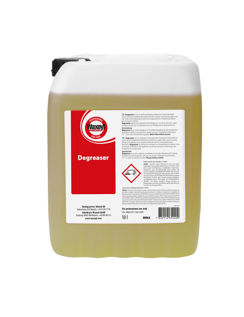
DEGREASER
Skoncentrowany preparat do mycia wstępnego i odtłuszczania podwozia.
ZOBACZ PRODUKT →CLEANER
ENGINE CLEANER
Wysoce zasadowy koncentrat do mycia silników oraz wielu innych powierzchni.
ZOBACZ PRODUKT →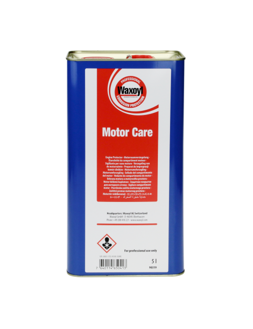
MOTOR CARE
Preparat do pielęgnacji i ochrony komory silnika oraz elementów pod maską.
ZOBACZ PRODUKT →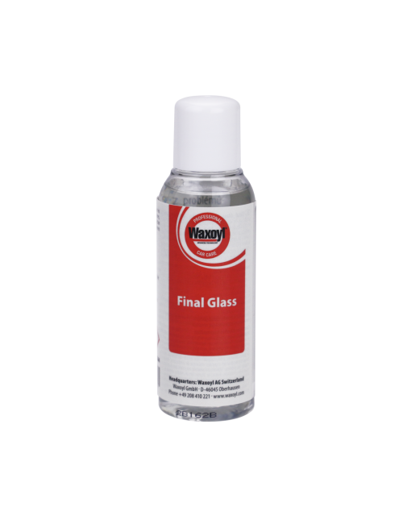
FINAL GLASS
Impregnat do szyb typu „niewidzialna wycieraczka”, działający od 60 km/h.
ZOBACZ PRODUKT →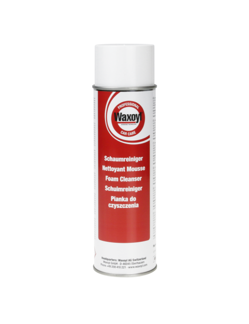
FOAM CLEANSER
Silna, wszechstronna i bezpieczna pianka do czyszczenia wnętrza i elementów zewnętrznych.
ZOBACZ PRODUKT →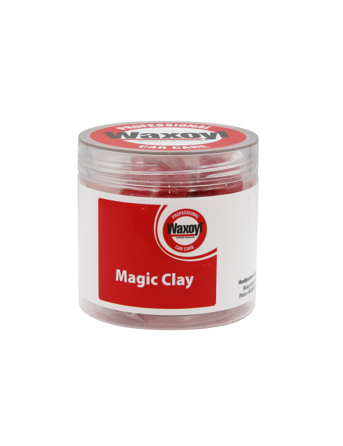
CLAY BAR / MAGIC CLAY
Miękka glinka do delikatnego czyszczenia gładkich powierzchni, takich jak lakier i szkło. Stosować z Clay Lube.
ZOBACZ PRODUKT →GLOVE
CLAY GLOVE
Rękawica z warstwą glinki lakierniczej do usuwania zanieczyszczeń z powierzchni lakieru.
ZOBACZ PRODUKT →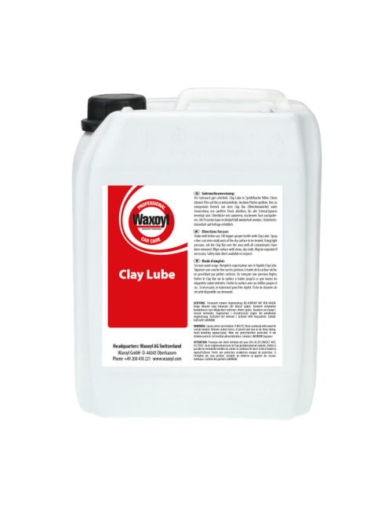
CLAY LUBE
Nawilżacz do bezpiecznej pracy z glinką podczas usuwania zanieczyszczeń.
ZOBACZ PRODUKT →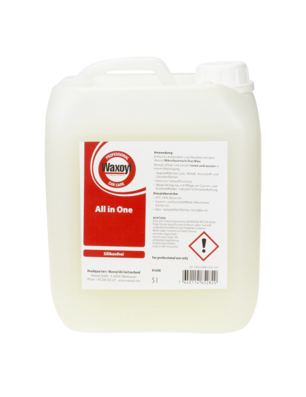
ALL IN ONE
Bez-silikonowy preparat, który czyści, pielęgnuje i chroni wnętrze oraz elementy zewnętrzne.
ZOBACZ PRODUKT →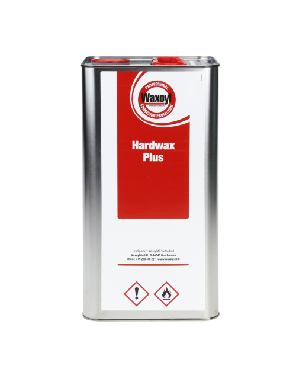
HARDWAX PLUS
Czarna, trwale elastyczna powłoka ochronna do zabezpieczania podwozia.
ZOBACZ PRODUKT →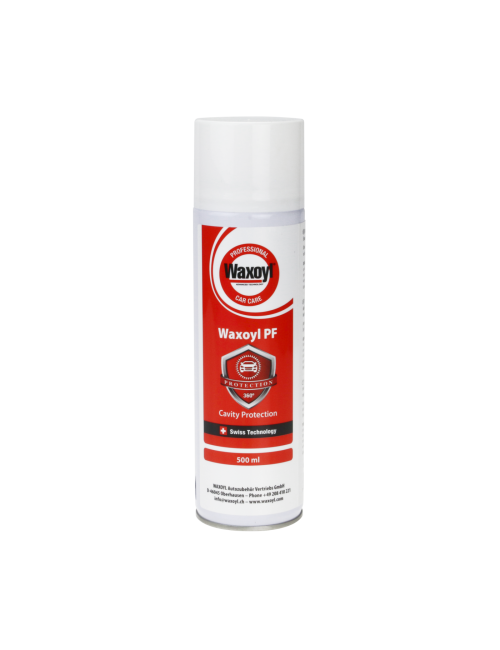
WAXOYL PF
Preparat do ochrony profili zamkniętych o bardzo dobrej penetracji i przyczepności.
ZOBACZ PRODUKT →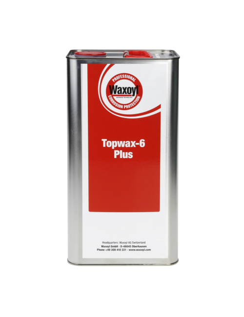
TOPWAX-6 PLUS
Woskowa warstwa ochronna do transportu, magazynowania i zastosowań zimowych.
ZOBACZ PRODUKT →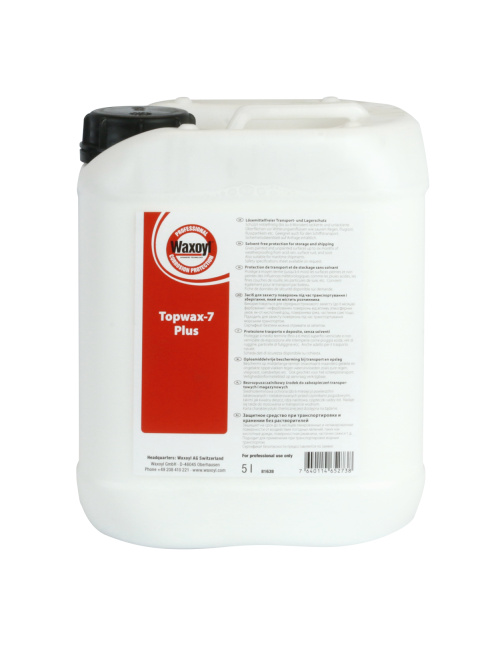
TOPWAX-7 PLUS
Transparentna, bezrozpuszczalnikowa powłoka chroniąca lakier i powierzchnie podatne na korozję.
ZOBACZ PRODUKT →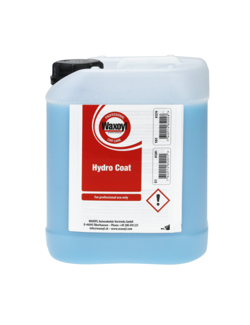
HYDRO COAT
Proste i szybkie zabezpieczenie powierzchni lakierowanych.
ZOBACZ PRODUKT →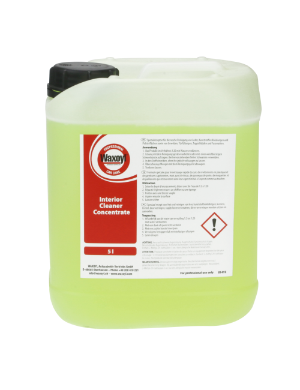
INTERIOR CLEANER
Koncentrat do szybkiego czyszczenia wnętrza z użyciem urządzenia Tornador.
ZOBACZ PRODUKT →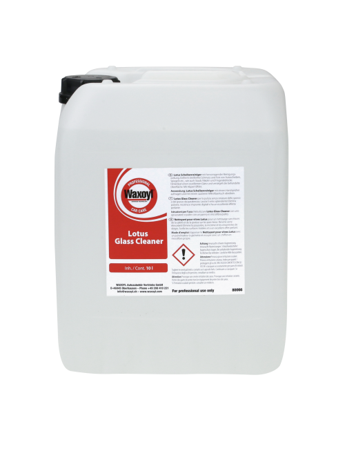
LOTUS GLASS CLEANER
Preparat do mocno zabrudzonych powierzchni szklanych i pozostałości kleju.
ZOBACZ PRODUKT →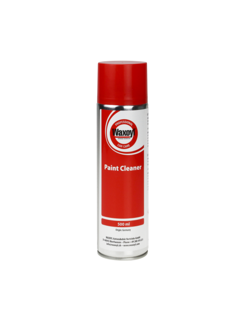
PAINT CLEANER / PRECLEAN
Środek do wstępnego czyszczenia powierzchni lakierowanych.
ZOBACZ PRODUKT →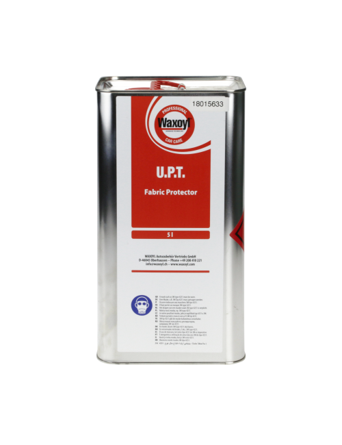
U.P.T. FABRIC PROTECTOR
Powłoka ochronna do tekstyliów, która odpycha wodę, olej i zabrudzenia.
ZOBACZ PRODUKT →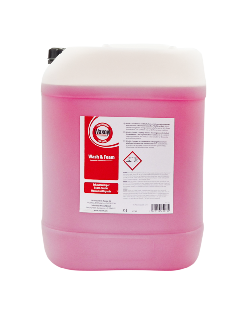
WASH & FOAM
Lekko alkaliczny koncentrat myjący, który pozostawia warstwę odpychającą brud.
ZOBACZ PRODUKT →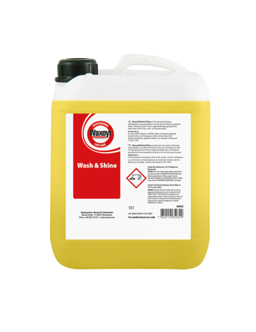
WASH & SHINE
Skuteczny szampon nabłyszczający z warstwą zabezpieczającą, bez silikonu.
ZOBACZ PRODUKT →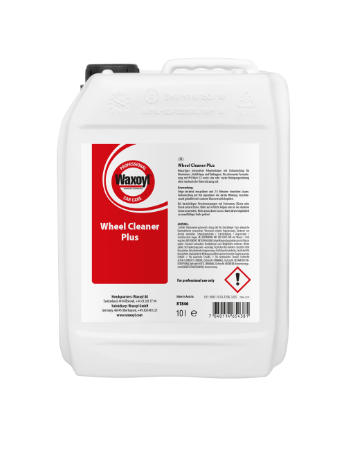
WHEEL CLEANER
Alkaliczny środek do usuwania brudu, tłuszczu, pyłu hamulcowego i rdzy.
ZOBACZ PRODUKT →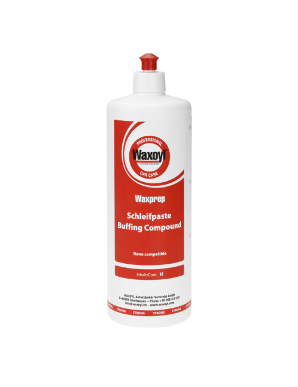
BUFFING COMPOUND
Profesjonalna mocna pasta polerska o właściwościach ściernych, bez silikonu.
ZOBACZ PRODUKT →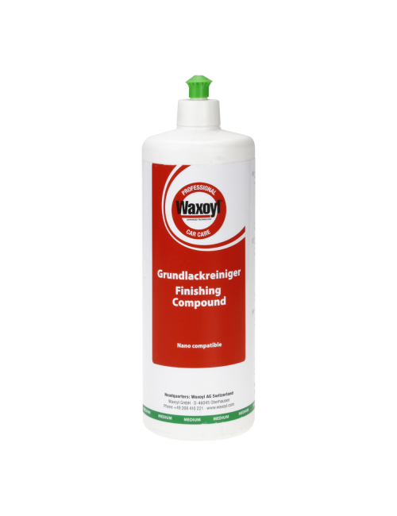
FINISHING COMPOUND
Profesjonalny, średni preparat polerski o drobnym ziarnie, bez silikonu.
ZOBACZ PRODUKT →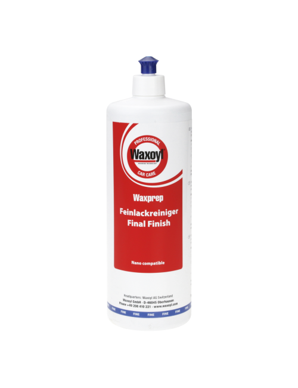
FINAL FINISH
Profesjonalny preparat do końcowego polerowania, o drobnym działaniu, bez silikonu.
ZOBACZ PRODUKT →Profesjonalne wyposażenie do pracy z wybranymi systemami Waxoyl.
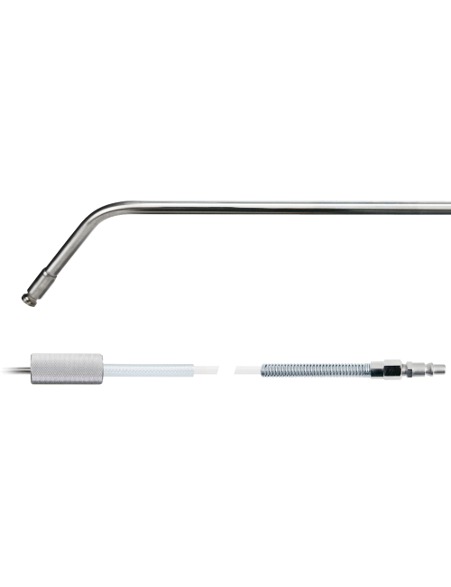
LANCA K2
Element profesjonalnego systemu aplikacyjnego Waxoyl.
ZOBACZ PRODUKT →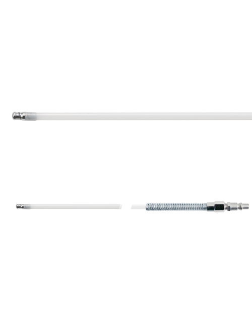
LANCA K3
Element profesjonalnego systemu aplikacyjnego Waxoyl.
ZOBACZ PRODUKT →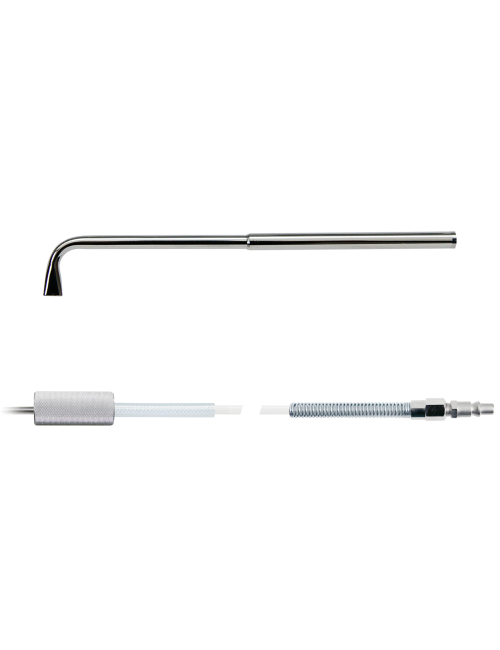
LANCA K4
Element profesjonalnego systemu aplikacyjnego Waxoyl.
ZOBACZ PRODUKT →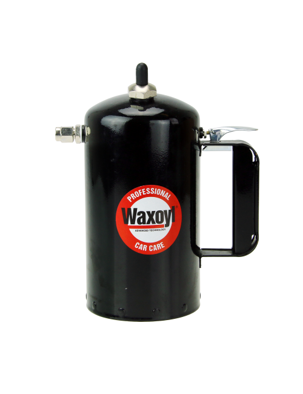
SURE SHOT SPRAYER
Pistolet natryskowy wskazany przez producenta do aplikacji U.P.T. Fabric Protector.
ZOBACZ PRODUKT →